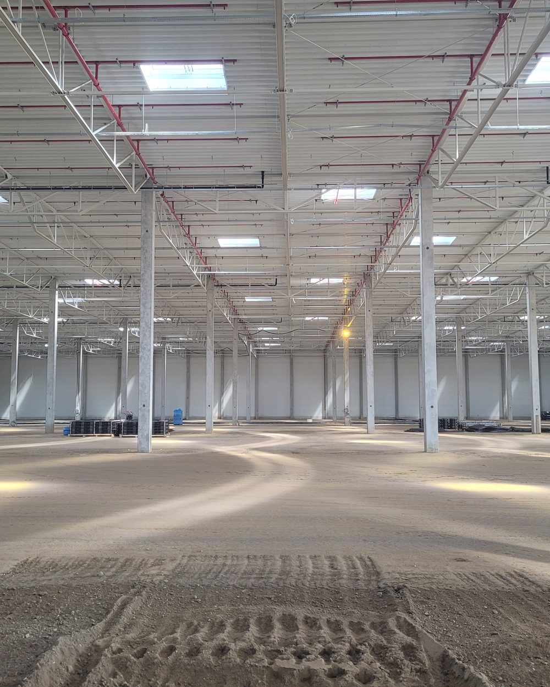
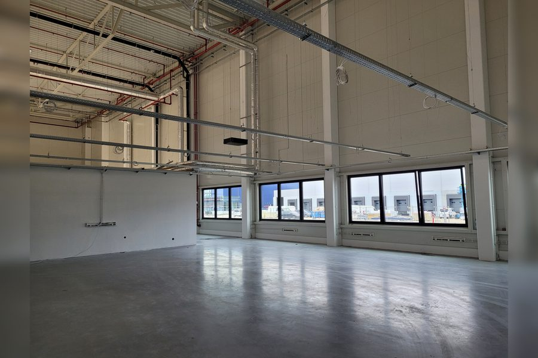
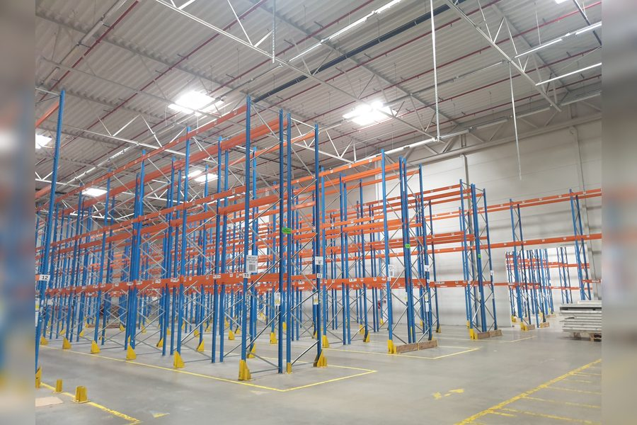
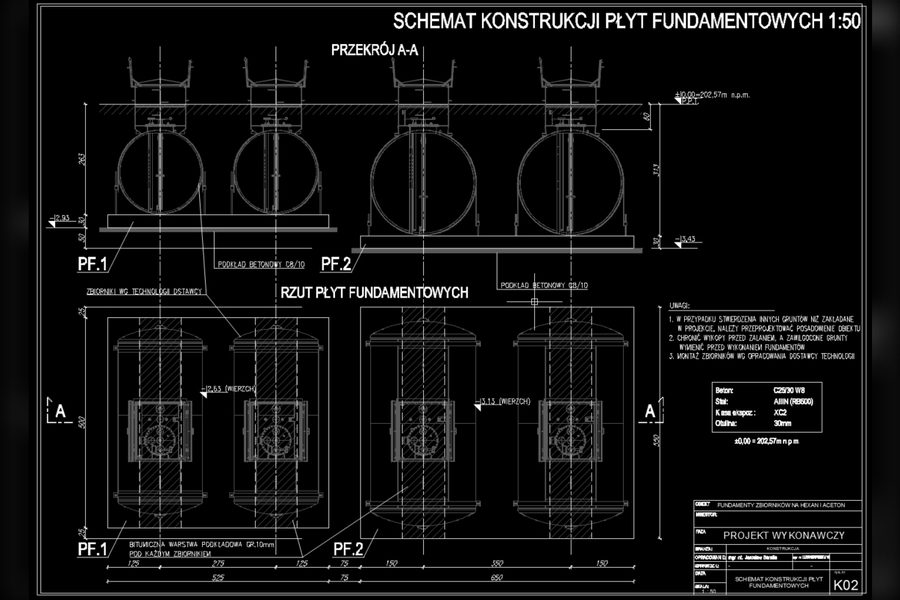
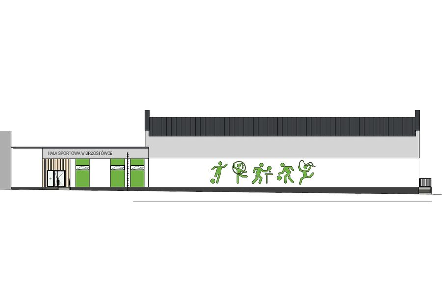
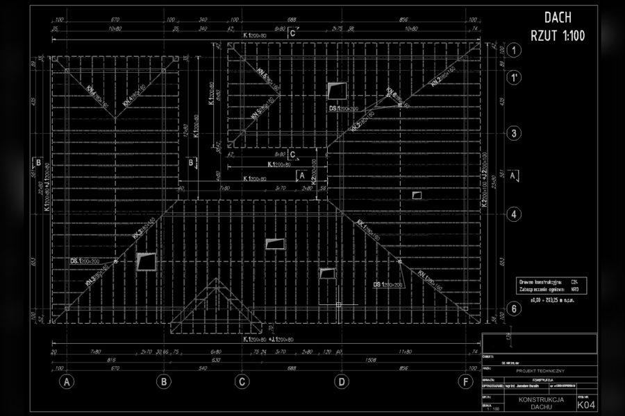
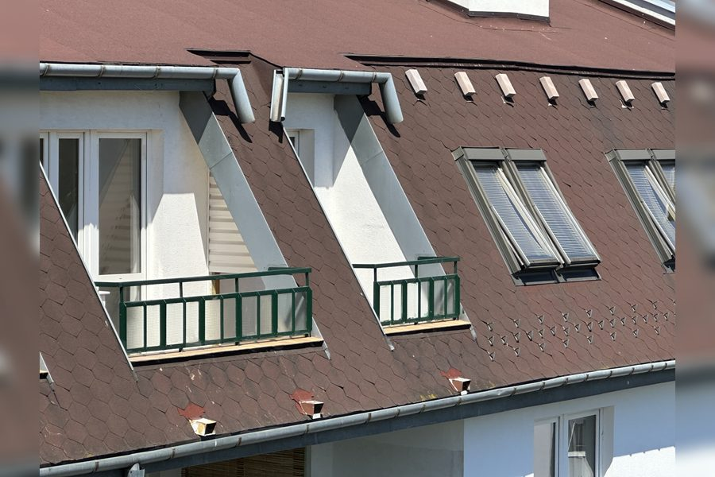

I specialize in production halls, warehouses and industrial facilities — I also design residential and public-use buildings. I serve as a construction supervision inspector, prepare technical assessments and periodic inspections. Unrestricted structural engineering license.
I work across the full investment cycle — from the first structural concept, through supervision of construction, to assessing the technical condition of existing facilities.
Complete structural documentation — from concept to detailed design. You receive solutions that the contractor understands and can build without calling with questions.
Acting as a construction supervision inspector and conducting periodic technical inspections. Someone on your side who catches errors before they turn into a costly fix.
Independent assessment of technical condition for facilities before reconstruction, modernization or renovation. Technical advisory for investors planning a larger investment.
I have completed the most projects in industrial construction — production and logistics halls, technological facilities, industrial floors, foundations for machinery and equipment.
Specialization does not mean limitation. I also design single- and multi-family residential buildings, public-use facilities and minor structures — over 150 completed projects give me solid experience across different types of structures.
If you are planning to build a hall, modernize an industrial facility, or need a supervision inspector with industrial experience — this is my daily bread. If you are building a house or modernizing a smaller facility — you are also in the right place.

I am a graduate of Lublin University of Technology. After my studies I went to construction sites — in total 14 years gaining experience on the contracting side, including as a site manager. That was my real university — there I learned how designs live once they leave the office.
What draws me to construction is the chance to create and experience the tangible results of my work. You can design your whole life and be left with stacks of paper. What I leave behind are halls, warehouses, houses — things that stand and work.
Construction is, above all, about the people you meet. Every time it's a different story, and every new site is like another book. Some chapters stay with you forever — and that, paradoxically, has a greater influence on how I design today than any structural textbook.
My passion is motorcycles. But the most important part of my life is family and our shared interests — travel, cycling, music. They remind me that a project has to be on time, because there's a plan for the weekend.
A representative cross-section of 150+ completed projects. Most documentation is subject to confidentiality — details discussed individually.






Four things that together add up to more than the sum of individual services.
There are plenty of structural engineers on the market. The decision to choose a specific person rarely comes down to price — usually it comes down to trust, which is built through concrete facts, not generalities.
Most structural engineers design from behind a desk. I spent 14 years on the construction site — including as a site manager — and I know where designs fall apart. That is knowledge you cannot get from books. Every design I now produce passes through this filter: "will the contractor be able to build this without trouble?".
I can design and manage construction works on any facility — with no limits on volume, height or number of storeys. This is a real advantage: in practice it is extremely helpful to handle a project from the very concept all the way to the occupancy permit. I can lead a project from start to finish.
Halls, warehouses, machine foundations, residential buildings, public-use facilities. The range is broad, but the heart of my specialization is one thing — industrial construction. With this base of experience, I rarely encounter a problem I have not seen in another variant.
I answer questions the same day. I understand the context of an individual investor as well as an architect, a developer or a project management firm. With each of them I speak their language.
Production halls, technological facilities, warehouses, plant modernizations. Complete structural documentation or its review. A supervision inspector with construction experience who speaks the investor's language.
The structural discipline for architectural projects. I respect the architectural concept and look for structural solutions that support the vision. I respond quickly to changes during the design phase.
A discipline inspector for long-term supervision of large investments. Site manager experience plus an unrestricted license — exactly the profile that project management firms require.
Design support during construction, documentation review, technical consulting, solutions to execution problems. A former site manager understands what the contractor needs.
Single-family houses, extensions, modernizations, garages, outbuildings. Technical consultations for people buying property or planning a larger private investment.
Subcontracting of elements within larger structural projects. Acting as the checking engineer for design documentation.
I am based in Lublin. I serve investments within a 50-kilometer radius — this covers most of the Lublin region and part of eastern Poland.
For structural design projects, distance matters less — most of the work is done remotely and documentation is delivered digitally. Location within range matters mainly for supervision and inspections, where physical presence on site is required.
The fastest way is by phone. I reply to e-mails the same day. I'll gladly talk about your project — with no obligation.